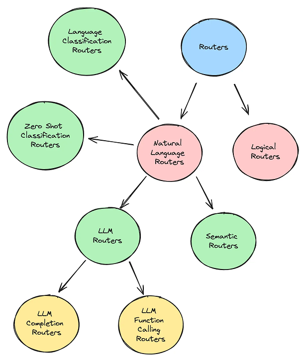
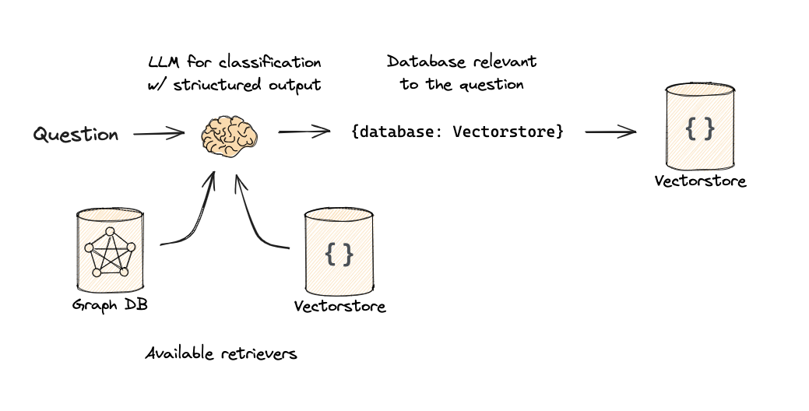
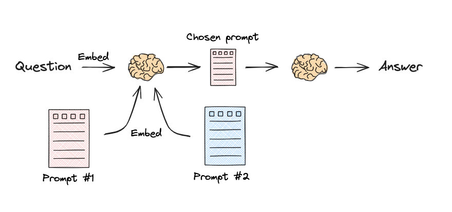

类型[1] #
- LLM Routers
- LLM Completion Routers
- LLM Function Calling Routers
- Semantic Routers [2]
- Zero Shot Classification Routers
- Language Classification Routers

Logical and Semantic routing[3] #
Logical routing #

code
from typing import Literal
from langchain_core.prompts import ChatPromptTemplate
from langchain_core.pydantic_v1 import BaseModel, Field
from langchain_openai import ChatOpenAI
# Data model
class RouteQuery(BaseModel):
"""Route a user query to the most relevant datasource."""
datasource: Literal["python_docs", "js_docs", "golang_docs"] = Field(
...,
description="Given a user question choose which datasource would be most relevant for answering their question",
)
# LLM with function call
llm = ChatOpenAI(model="gpt-3.5-turbo-0125", temperature=0)
structured_llm = llm.with_structured_output(RouteQuery)
# Prompt
system = """You are an expert at routing a user question to the appropriate data source.
Based on the programming language the question is referring to, route it to the relevant data source."""
prompt = ChatPromptTemplate.from_messages(
[
("system", system),
("human", "{question}"),
]
)
# Define router
router = prompt | structured_llm
def choose_route(result):
if "python_docs" in result.datasource.lower():
### Logic here
return "chain for python_docs"
elif "js_docs" in result.datasource.lower():
### Logic here
return "chain for js_docs"
else:
### Logic here
return "golang_docs"
from langchain_core.runnables import RunnableLambda
full_chain = router | RunnableLambda(choose_route)
full_chain.invoke({"question": question})
Semantic routing #

code
from langchain.utils.math import cosine_similarity
from langchain_core.output_parsers import StrOutputParser
from langchain_core.prompts import PromptTemplate
from langchain_core.runnables import RunnableLambda, RunnablePassthrough
from langchain_openai import ChatOpenAI, OpenAIEmbeddings
# Two prompts
physics_template = """You are a very smart physics professor. \
You are great at answering questions about physics in a concise and easy to understand manner. \
When you don't know the answer to a question you admit that you don't know.
Here is a question:
{query}"""
math_template = """You are a very good mathematician. You are great at answering math questions. \
You are so good because you are able to break down hard problems into their component parts, \
answer the component parts, and then put them together to answer the broader question.
Here is a question:
{query}"""
# Embed prompts
embeddings = OpenAIEmbeddings()
prompt_templates = [physics_template, math_template]
prompt_embeddings = embeddings.embed_documents(prompt_templates)
# Route question to prompt
def prompt_router(input):
# Embed question
query_embedding = embeddings.embed_query(input["query"])
# Compute similarity
similarity = cosine_similarity([query_embedding], prompt_embeddings)[0]
most_similar = prompt_templates[similarity.argmax()]
# Chosen prompt
print("Using MATH" if most_similar == math_template else "Using PHYSICS")
return PromptTemplate.from_template(most_similar)
chain = (
{"query": RunnablePassthrough()}
| RunnableLambda(prompt_router)
| ChatOpenAI()
| StrOutputParser()
)
print(chain.invoke("What's a black hole"))
【基于embedding的相似度匹配】